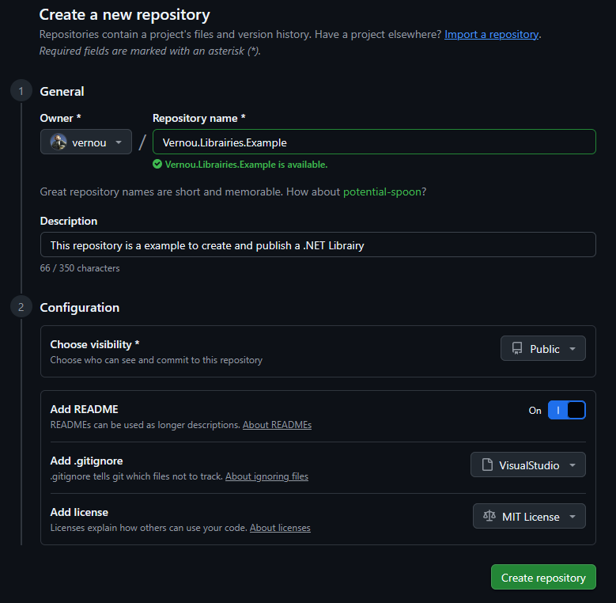
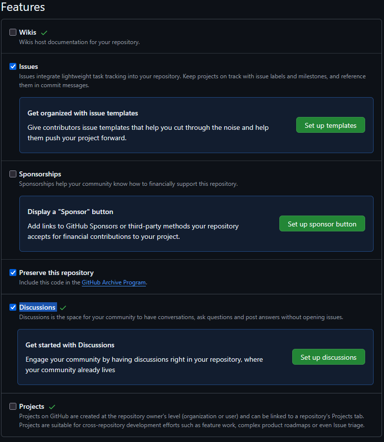
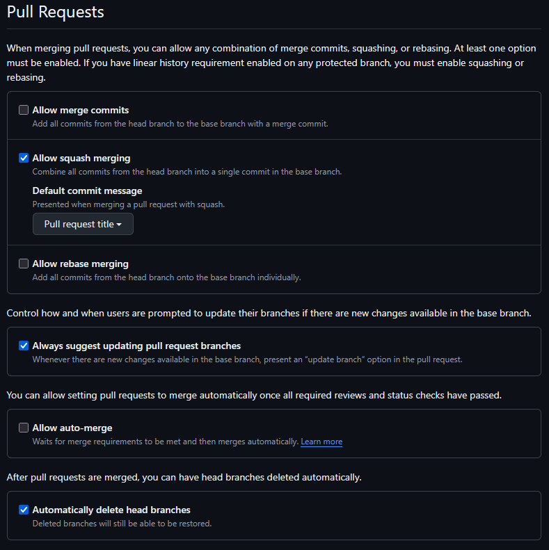
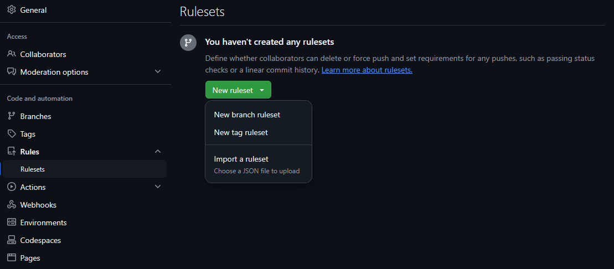
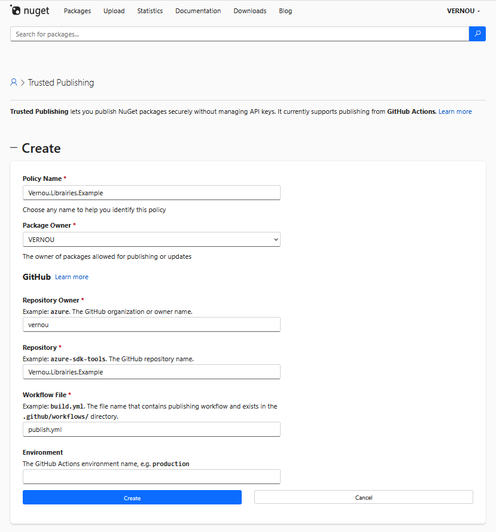
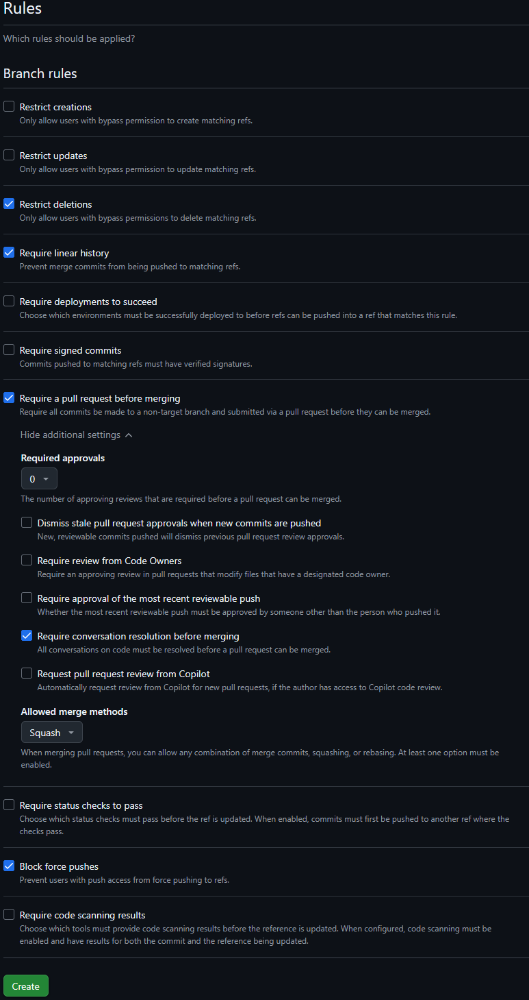

Développer une bibliothèque .NET Open Source
dotnet / GitHub / NuGet
Dans mon travail, j'ai régulièrement besoin de créer des bibliothèques .NET. Mais pas suffisamment pour que je me souvienne parfaitement de la procédure. Dans cette article, je détaille les étapes que je suis pour créer une bibliothèque .NET, depuis la création et la configuration du dépôt GitHub jusqu'à la publication sur NuGet.
1) Créer un dépot GitHub
Lors de la création d'un dépôt GitHub, il faut saisir les informations suivantes:
- Remplir dans "General" :
- Sélectionner dans "Owner" l'utilisateur ou l'organisation qui sera le propriétaire du dépôt
- Saisir dans "Repository Name" le nom de la bibliothèque
- Saisir dans "Description" une courte description de la bibliothèque
- Remplir dans "Configuration" :
- Sélectionner dans "Choose visibility" l'option "Public"
- Activer l'option "Add README"
- Sélectionner dans "Add .gitignore" l'option "VisualStudio"
- Sélectionner dans "Add license" l'option "MIT Licence"
- Pour finir, cliquer sur le bouton "Create repository"

2) Initialiser la solution .NET
Les commandes suivantes permettent d'initialiser une solution .NET avec un projet de bibliothèque et son projet de test :
# Clone et prépare le dépôt git clone https://github.com/vernou/Vernou.Librairies.Example.git cd Vernou.Librairies.Example # Crée le dossier "src" pour ranger le code source des projets mkdir src cd src # Crée le projet de la bibliothèque dotnet new classlib --name Vernou.Librairies.Example --framework net10.0 dotnet add Vernou.Librairies.Example package Microsoft.SourceLink.GitHub # Crée le projet de test dotnet new install xunit.v3.templates dotnet new xunit3 --name Vernou.Librairies.Example.Tests --framework net10.0 dotnet add Vernou.Librairies.Example.Tests reference Vernou.Librairies.Example dotnet add Vernou.Librairies.Example.Tests package Shouldly # Crée la solution dotnet new sln --name Vernou.Librairies.Example --format slnx dotnet sln add Vernou.Librairies.Example dotnet sln add Vernou.Librairies.Example.Tests
Ensuite, il faut ajouter l'îcone dans le dossier du projet de la bibliothèque à "Assets/icon.png". Il doit s'agir d'une image au format PNG de 128x128 pixels. Par exemple :
Ensuite, il modifier le fichier csproj de la bibliothèque pour y ajouter les informations nécessaires à la publication sur NuGet :
<Project Sdk="Microsoft.NET.Sdk"> <PropertyGroup> <TargetFramework>net10.0</TargetFramework> <ImplicitUsings>enable</ImplicitUsings> <Nullable>enable</Nullable> <GenerateDocumentationFile>true</GenerateDocumentationFile> </PropertyGroup> <!-- NuGet Metadata --> <PropertyGroup> <Version>1.0.0</Version> <Description>Une courte description jusqu'à 4000 caractères</Description> <Authors>Cédric VERNOU</Authors> <PackageProjectUrl>https://github.com/vernou/Vernou.Librairies.Example</PackageProjectUrl> <PackageLicenseExpression>MIT</PackageLicenseExpression> <PackageTags>aspnetcore, swashbuckle, typedresults, httpresults</PackageTags> <PackageReadmeFile>README.md</PackageReadmeFile> <PackageIcon>icon.png</PackageIcon> </PropertyGroup> <!-- Source Link --> <PropertyGroup> <EmbedUntrackedSources>true</EmbedUntrackedSources> <IncludeSymbols>true</IncludeSymbols> <RepositoryType>git</RepositoryType> <RepositoryUrl>https://github.com/vernou/Vernou.Librairies.Example.git</RepositoryUrl> <SymbolPackageFormat>snupkg</SymbolPackageFormat> </PropertyGroup> <ItemGroup> <None Include="..\..\README.md" Pack="true" PackagePath="\"/> <None Include="Assets\icon.png" Pack="true" PackagePath="\" /> </ItemGroup> <ItemGroup> <PackageReference Include="Microsoft.SourceLink.GitHub" Version="8.0.0" PrivateAssets="All"/> </ItemGroup> </Project>
Ensuite, il faut vérifier que l'ensemble compile, que les tests fonctionnent et que le package NuGet se génère correctement :
# Se placer dans le dossier de la solution cd src # Compile la solution et exécute les projets de test dotnet test # Se placer dans le dossier du projet de la bibliotèque cd Vernou.Librairies.Example # Génére le package NuGet dotnet pack
Finalement, il faut pousser les modifications sur GitHub :
# Pousse les modiffications sur GitHub git add * git commit -m "feat(lib): Initialize the solution" git push
3) Mise en place de l'intégration continue
Dans le dépôt sur GitHub, il faut ajouter le fichier ".github/workflows/ci.yml" :
name: CI on: push: branches: [ "main" ] pull_request: branches: [ "main" ] jobs: ci: name: Build and Test runs-on: ubuntu-latest defaults: run: working-directory: src steps: - uses: actions/checkout@v4 - name: Setup .NET uses: actions/setup-dotnet@v4 with: dotnet-version: 10.0.x - name: dotnet restore run: dotnet restore - name: dotnet build run: dotnet build --no-restore - name: dotnet test run: dotnet test --no-build --verbosity normal
Avec le message de commit :
feat(lib): Add CI workflow
4) Configurer le dépot GitHub
Dans l'onglet "Settings" du dépôt sur GitHub, il faut configurer les options suivantes:
-
Dans "General":
-
Activer les "Features" :
- Issues
- Preserve this repository
- Discussions

-
Pour "Pull Requests":
- Activer "Allow squash merging" avec Sélectionner "Default commit message" à "Pull request title"
- Activer "Always suggest updating pull request branches"
- Activer "Automatically delete head branches"

-
Activer les "Features" :
-
Dans "Rules > Rulesets":
-
Cliquer sur "New ruleset > New branch ruleset"

- Saisir dans "Ruleset Name" "default-branches"
- Sélectionner "Enforcement status" à "Active"
-
Dans "Target branches", sélectionnez "Include default branch"

-
Dans "Branch rules"
- Activer "Restrict deletions"
- Activer "Require linear history"
- Activer "Require a pull request before merging" avec l'option "Require conversation resolution before merging"
- Activer "Block force pushes"

- Cliquer sur "Create"
-
Cliquer sur "New ruleset > New branch ruleset"
5) Publier la bibliothèque sur nuget.org
Pour publier la bibliothèque sur nuget.org, j'utilise deux méthodes :
Publication manuelle avec le CLI dotnet
Pour certaines de mes bibliothèques, je publie une nouvelle version rarement. Je me retrouver à devoir à adapter le pipeline à chaque fois. Dans ce cas là, je préfére le faire manuellement.
Pour publier une nouvelle version de la bibliothèque manuellement, il faut exécuter les commandes suivantes :
Publication automaticée avec un pipeline GitHub Actions
One possible testing approach is to swap your production database with SQLite, effectively using it as a testing "fake".
Une approche possible pour tester consiste à substituer le système de gestion de base de données (SGBD) par SQLite, en l'utilisant comme une base de données factice.